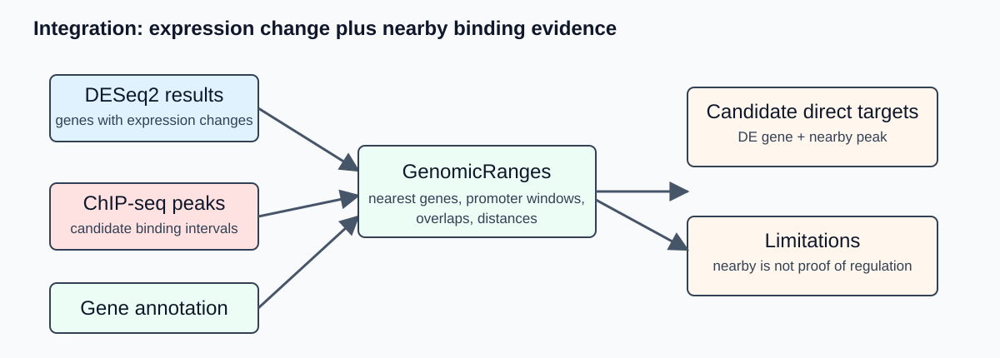

Day 4 - RNA-seq and ChIP-seq Integration, Visualization and Final Presentation
Overview
Day 4 combines RNA-seq and ChIP-seq outputs. Students connect differential expression results to nearby ChIP-seq peaks, produce interpretable figures and prepare a concise three-slide lab-meeting summary.
The goal is careful prioritization of candidate regulatory relationships, not overstatement. A ChIP-seq peak near a differentially expressed gene is a candidate direct regulatory link that depends on the assumptions and quality of the data.
Today’s path: how your repository grows

DESeq2 result table
+ ChIP-seq peak file
+ genome annotation
-> genomic interval objects
-> peak-to-gene table
-> DE genes with nearby peaks
-> summary plots
-> final three slides
-> final commit and pushLearning outcomes
By the end of Day 4, students should be able to:
- explain genomic intervals and coordinate-system pitfalls;
- import DESeq2 results, peak files and gene annotations;
- compute nearest-gene and promoter-overlap annotations;
- distinguish candidate direct and indirect regulatory effects;
- create interpretable summary plots;
- document limitations of RNA-seq and ChIP-seq integration;
- prepare a three-slide presentation of data, workflow and biological interpretation.
Before you start
Use your own outputs or checkpoint files:
results/rnaseq/deseq2/deseq2_results.csv or .tsv
results/chipseq/peaks/with_input/TF_IP_1_with_input_peaks.narrowPeak
data/genome/annotation.gff3
code/day1/metadata/samples_rnaseq.tsv
code/day1/metadata/samples_chipseq.tsvIf checkpoint files are used, record their source in code/day4_integration/execution_note.md.
Time plan
| Part | Topic | Target time |
|---|---|---|
| 1 | Genomic interval theory | 35 min |
| 2 | Import RNA-seq, ChIP-seq and annotation | 35 min |
| 3 | Peak-to-gene annotation | 55 min |
| 4 | DEG and peak integration | 55 min |
| 5 | Figures and final slides | 90 min |
| 6 | Final commit | 15 min |
Conceptual background
Genomic intervals
A genomic interval is a feature on a sequence coordinate system:
sequence name, start, end, strand, metadata columnsExamples include genes, CDS features, promoters, ChIP-seq peaks, read alignments and motif matches. Most integration problems in genomics reduce to operations on intervals.
An interval \(A\) can be represented as:
\[ A = (chr_A, start_A, end_A, strand_A) \]
Two intervals on the same chromosome overlap when:
\[ start_A \le end_B \quad \text{and} \quad start_B \le end_A \]
In software, exact definitions depend on whether coordinates are one-based closed intervals or zero-based half-open intervals. This is why file formats matter.
Coordinate systems and file formats
| Format | Common convention | Practical warning |
|---|---|---|
| GFF3/GTF | one-based, closed | gene annotations usually use this |
| BED/narrowPeak | zero-based, half-open | MACS peak outputs are BED-like |
| BAM/SAM | one-based leftmost alignment position in SAM display | tools handle this internally |
| bigWig | indexed genome coverage | mostly used for visualization |
Most R/Bioconductor import functions handle common formats correctly. Problems usually arise when files come from different genome assemblies or use inconsistent chromosome names.
Never integrate RNA-seq genes and ChIP-seq peaks unless the genome assembly and sequence names are consistent.
Peak-to-gene annotation is a rule, not proof
There are several reasonable ways to associate peaks with genes:
| Strategy | Biological question | Limitation |
|---|---|---|
| nearest gene | Which gene is closest to each peak? | closest is not always regulated |
| promoter window | Is the peak near a likely promoter? | promoter boundaries may be uncertain |
| overlap with gene body | Does the peak overlap an annotated feature? | TFs often bind outside coding regions |
| distance to TSS | How close is binding to transcription start? | TSS annotation may be incomplete |
For bacteria, promoter-proximal binding is often informative, but operons and divergent promoters complicate interpretation. A peak between two genes may regulate either, both or neither.
In bacterial genomes, annotation may also list genes rather than true transcription start sites. That means “nearest gene” and “nearest promoter” are practical approximations. They are useful for prioritization, but they should be reported as assumptions in the final interpretation.
Promoter windows and strand
For a gene on the positive strand, a simple promoter window might be:
\[ [start - 500,\ start + 100] \]
For a gene on the negative strand, transcription starts at the higher coordinate, so the corresponding window is:
\[ [end - 100,\ end + 500] \]
The exact values are assumptions. In a teaching analysis, a fixed window such as 500 bp upstream and 100 bp downstream is acceptable if it is clearly documented.
Integrating DESeq2 and ChIP-seq results
RNA-seq and ChIP-seq provide different evidence:
| Evidence | What it supports |
|---|---|
| RNA-seq differential expression | gene expression changes between conditions |
| ChIP-seq peak | protein occupancy or enrichment at genomic region |
| motif in peak | sequence pattern compatible with binding |
| peak near DE gene | candidate direct regulatory relationship |
A useful classification is:
DE gene with nearby peak -> candidate direct target
DE gene without nearby peak -> candidate indirect effect or missed binding
peak near non-DE gene -> binding without detected expression change
neither DE nor nearby peak -> no evidence in this experimentThis classification is a hypothesis-generating summary. Biological validation or independent evidence is required for strong mechanistic claims.
Visualization principles
Good final figures should answer specific questions:
| Question | Useful plot/table |
|---|---|
| Did replicates behave as expected? | PCA or sample-distance plot |
| Which genes changed? | MA plot, volcano plot, top DEG table |
| How many peaks were called? | peak-count table with/without input |
| Where are peaks relative to genes? | distance-to-gene histogram |
| Which DE genes have nearby peaks? | candidate direct target table |
| What does one locus look like? | genome-browser track snapshot |
For the final three slides, prefer a small number of clear plots over many partially explained figures.
What the tools are doing
rtracklayer
rtracklayer imports genomic file formats such as GFF3, GTF, BED, narrowPeak and bigWig into R/Bioconductor objects. It preserves coordinates and metadata columns when possible.
GenomicRanges
GenomicRanges represents genomic features as interval objects. Core operations include:
| Operation | Typical function | Question |
|---|---|---|
| overlap | findOverlaps() |
Which intervals intersect? |
| nearest neighbor | nearest() / distanceToNearest() |
Which gene is closest to each peak? |
| resize/extend | resize(), flank() |
What is the promoter region? |
| set operations | intersect(), union(), setdiff() |
How do interval sets compare? |
The advantage of using interval-aware objects is that chromosome names, ranges and strand can be handled explicitly rather than through ad hoc spreadsheet operations.
dplyr / ggplot2
After interval operations, many outputs become regular tables: peak ID, nearest gene, distance, log2 fold change, adjusted p-value and annotation category. dplyr is useful for filtering and joining these tables. ggplot2 is useful for producing final plots.
Guided demonstration
The instructor will show:
- importing a DESeq2 result table;
- importing a
narrowPeakfile; - importing GFF3 annotation;
- converting gene features into genomic intervals;
- computing nearest genes to peaks;
- linking peak-associated genes to DESeq2 results;
- selecting one result suitable for the final presentation.
Hands-on practical
Create folders:
mkdir -p code/day4_integration
mkdir -p results/logs/day4
mkdir -p results/integration/tables
mkdir -p results/integration/plots
mkdir -p slidesCreate code/day4_integration/execution_note.md in VS Code and paste:
# Day 4 execution note
## Inputs used
- DESeq2 table:
- peak file:
- annotation file:
- checkpoint files, if any:
## Integration rules
- nearest gene:
- promoter window:
- adjusted p-value threshold:
- log2 fold-change threshold:
## Limitations
- R skeleton for interval integration
Save as code/day4_integration/peak_gene_integration.R and adapt column names as needed:
suppressPackageStartupMessages({
library(GenomicRanges)
library(rtracklayer)
library(tidyverse)
})
# Inputs
peak_file <- "results/chipseq/peaks/with_input/TF_IP_1_with_input_peaks.narrowPeak"
annotation_file <- "data/genome/annotation.gff3"
deseq_file <- "results/rnaseq/deseq2/deseq2_results.tsv"
# Import data
peaks <- import(peak_file, format = "BED")
annotation <- import(annotation_file)
de <- read_tsv(deseq_file, show_col_types = FALSE)
# Keep gene-like features. Adapt this line to the organism annotation.
genes <- annotation[annotation$type %in% c("gene", "CDS")]
# Create stable gene identifiers from available metadata.
gene_id <- mcols(genes)$gene_id
if (is.null(gene_id)) gene_id <- mcols(genes)$ID
if (is.null(gene_id)) gene_id <- mcols(genes)$locus_tag
if (is.null(gene_id)) gene_id <- paste0("gene_", seq_along(genes))
mcols(genes)$gene_id <- as.character(gene_id)
# Nearest gene per peak. Peak intervals are unstranded, so ignore strand here.
nearest_hits <- distanceToNearest(peaks, genes, ignore.strand = TRUE)
peak_gene <- tibble(
peak_index = queryHits(nearest_hits),
gene_index = subjectHits(nearest_hits),
distance_to_gene = mcols(nearest_hits)$distance,
gene_id = mcols(genes)$gene_id[subjectHits(nearest_hits)],
peak_chr = as.character(seqnames(peaks))[queryHits(nearest_hits)],
peak_start = start(peaks)[queryHits(nearest_hits)],
peak_end = end(peaks)[queryHits(nearest_hits)]
)
write_tsv(peak_gene, "results/integration/tables/peak_nearest_gene.tsv")
# Join with DESeq2 results. Adapt the gene ID column if needed.
if (!"gene_id" %in% names(de)) {
first_col <- names(de)[1]
de <- de %>% rename(gene_id = all_of(first_col))
}
de <- de %>% mutate(gene_id = as.character(gene_id))
combined <- peak_gene %>%
left_join(de, by = "gene_id") %>%
mutate(
is_de = !is.na(padj) & padj < 0.05 & abs(log2FoldChange) >= 1,
candidate_class = case_when(
is_de ~ "DE gene with nearby peak",
TRUE ~ "Nearby peak without DE evidence"
)
)
write_tsv(combined, "results/integration/tables/peak_gene_deseq2_join.tsv")Run it:
Rscript code/day4_integration/peak_gene_integration.R \
2>&1 | tee results/logs/day4/01_peak_gene_integration.logExample plots
Distance-to-gene plot:
library(tidyverse)
peak_gene <- read_tsv("results/integration/tables/peak_nearest_gene.tsv")
ggplot(peak_gene, aes(x = distance_to_gene)) +
geom_histogram(bins = 40) +
labs(
x = "Distance from peak to nearest gene (bp)",
y = "Number of peaks",
title = "Peak-to-gene distance distribution"
) +
theme_bw()
ggsave("results/integration/plots/peak_gene_distance_histogram.pdf", width = 7, height = 5)Candidate-target table:
combined <- read_tsv("results/integration/tables/peak_gene_deseq2_join.tsv")
candidate_targets <- combined %>%
filter(!is.na(padj), padj < 0.05, abs(log2FoldChange) >= 1) %>%
arrange(padj, desc(abs(log2FoldChange)))
write_tsv(candidate_targets, "results/integration/tables/candidate_direct_targets.tsv")Final three slides
Prepare three slides in slides/final_summary.qmd or another slide format approved by the instructor.
Slide 1 - Data and design
organism, biological question, conditions, replicates, public accessions or checkpoint source
Slide 2 - Workflow and quality control
execution route, main commands/tools, QC summary, mapping/counting or peak-calling summary
Slide 3 - Biological result and limitation
one key RNA-seq or ChIP-seq result, integration summary, one limitation and one next stepAvoid filling slides with command lines. Commands belong in the repository. Slides should communicate design, evidence and interpretation.
Checkpoint route
Checkpoint mode is acceptable if documented. Include:
which files were provided
which steps were demonstrated but not run locally
which analyses were run by the student
how the checkpoint files relate to the full workflowThe final repository should make it clear whether the student performed:
full local execution
partial local execution
university-machine execution
checkpoint-based downstream analysisExpected outputs
Commit small outputs:
code/day4_integration/
results/logs/day4/
results/integration/tables/
results/integration/plots/
slides/final_summary.qmd or exported PDF
README.md updated with final workflow summaryDo not commit large binary tracks unless instructed:
*.bam
*.bai
*.bw
*.bigWigFinal repository checklist
Your repository should contain:
- a clear
README.mdwith biological question, dataset, tools and execution route; - metadata tables for RNA-seq and/or ChIP-seq;
- accession tables or checkpoint provenance;
- scripts or clearly documented commands;
.gitignoreexcluding large sequencing files;- logs or summaries from executed steps;
- DESeq2 or peak-calling result tables;
- integration tables or plots when relevant;
- final three-slide summary;
- a short limitations section.
Final commit
git add README.md code/day4_integration results/logs/day4 results/integration slides
git commit -m "Add Day 4 integration and final presentation"
git pushSelf-check questions
- What coordinate-system assumptions are involved when combining GFF3 and narrowPeak files?
- Why is nearest-gene annotation not equivalent to proof of regulation?
- How does promoter-window analysis differ for positive- and negative-strand genes?
- What evidence supports a candidate direct target?
- Which result from your analysis would be most convincing in a lab meeting?
- What is the most important limitation of your analysis?
How to report issues
If you have a GitHub account, report Day 4 problems by opening an Issue in your student repository.
Include:
Day 4and the step number in the issue title;- your operating system;
- whether you used full local execution or checkpoint mode;
- the command you ran;
- the exact error message;
- the relevant log file, for example
results/logs/day4/01_peak_gene_integration.log.
If you cannot create or access a GitHub account, email:
francesco.gualdrini@gmail.comUse email only for GitHub account/access problems. Use GitHub Issues for workshop technical questions whenever possible.